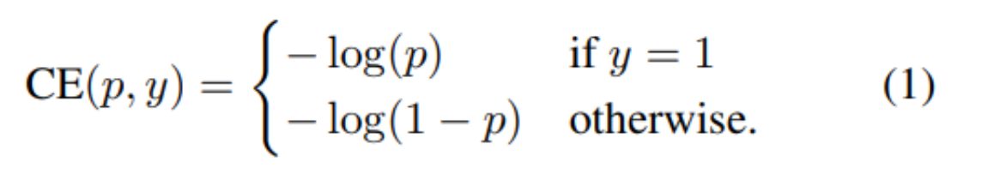

論文
１．どんなものか
Object Detectionは１段階検出と２段階検出の２種類があり，１段階検出は今のところ後者に対して後れを取っている． これはモデルの学習するデータである検出対象とそれ以外の背景において大きく不均衡が生じる．ことが原因であり，これに対して標準的なCEに対して精度よく分類された例の損失を小さくすることを提案．
２．先行研究との差分
既存の損失関数，例えばHuber損失では大きな誤差を持つような識別が困難なデータ(hard sample)に対して重み付けし，外れ値の寄与を低減する物であった．
これに対して，Focal Lossでは，hard sampleの持つ損失に対して小さな重みを付けることで損失全体に対して損失値全体に対する寄与率を下げている．
３．技術や研究のキモ
detectionに対する部分は省略，分類タスクに関する部分のみまとめる．
2クラス分類想定の通常のCrossEntropy
Focal loss
 通常のCrossEntropyの式に対してγというハイパラを導入．正解クラスに対する予測確率が大きいようなデータのロスを下げる．
またαはしばしば不均衡対策として損失関数に用いられるパラメータ．よくあるケースとしては各クラスのデータ数の逆数に設定される．
通常のCrossEntropyの式に対してγというハイパラを導入．正解クラスに対する予測確率が大きいようなデータのロスを下げる．
またαはしばしば不均衡対策として損失関数に用いられるパラメータ．よくあるケースとしては各クラスのデータ数の逆数に設定される．
４．有効性の証明
online hard example mining(OHEM)手法 による評価及び，COCOに対する実験で証明．